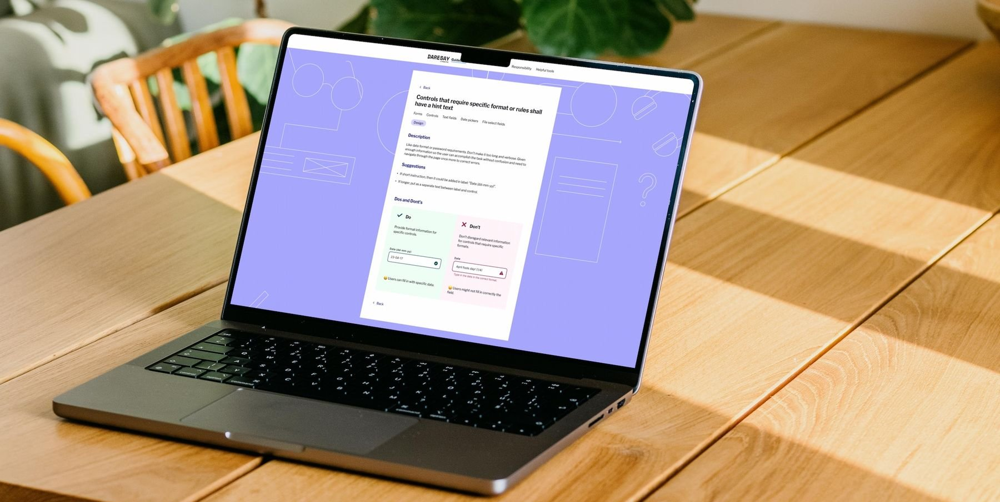
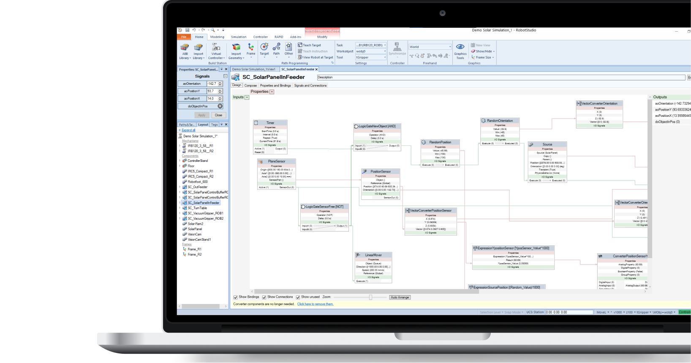
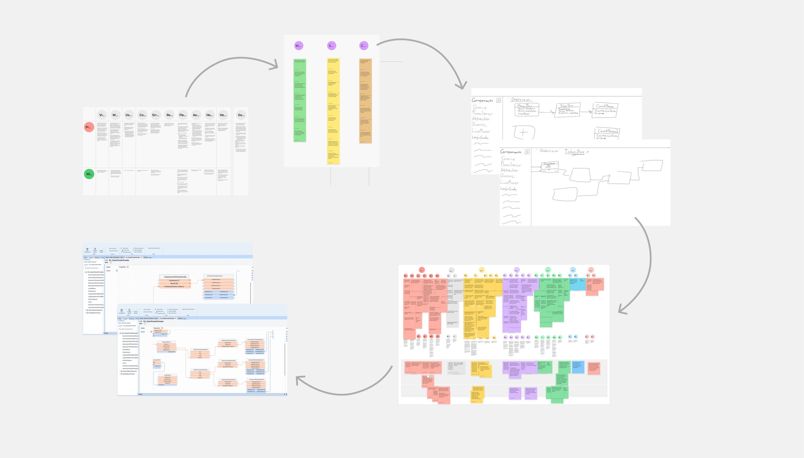

I look beyond individual features, helping teams make strategic decisions that align user needs, business goals, and long-term product direction.
User Research
Through user research, I bring evidence into the design process to ensure we're solving the right problem in the right way.
Interaction Design
I design interactions that make complex systems understandable, usable, and effective, by drawing upon experience from different product domains and a deep understanding of human cognition.
Design System
I contribute to scalability, consistency and efficiency by actively consuming and contributing with patterns and frameworks to evolving design systems.
About me —
I have always been fascinated by human thinking and how differently we can experience the world. That led me to study cognitive science. I then pursued a master's degree in interaction design to apply my theoretical foundation in a practical domain where I could also make use of my creative side.
Creativity has always been an important part of my life, from writing and photography to various personal projects. Today, I bring that creative side into my work, combining it with an understanding of people to create experiences that are useful and inclusive.
Today I live in Stockholm with my fiancé, but I am born and raised in Umeå. Whenever I get the chance, I head back north to visit my family and spend time in our summer house on the coast. It is where I find the space to recharge, reflect, and return with a fresh perspective.
Designing a driver experience that minimizes friction and keeps attention on the road via the platform Smart Dash —
Jan 2023 – PresentScania & TratonContinuous DevelopmentUX/UI Designer & Area Lead
This case study includes limited details due to confidentiality
Summary —
Smart Dash was developed to create a safer, smarter and more connected driving experience by bringing together the vehicle's digital functions in a common platform. As a UX/UI Designer at Scania, I work through the full design process with continuous development – from exploring user needs to designing, testing, and refining UX/UI solutions. Alongside individual features and flows, I also contribute to the design system and broader interaction patterns, helping create a more consistent and scalable experience.
My role —
Delivering end-to-end UX design for digital interactions with vehicle functions.
Developing reusable patterns and frameworks used across the platform.
Collaborating cross-functionally in an agile, global context.
Coordinating upcoming work, guiding design explorations and supporting other designers within my domain.
Outcome —
Delivered, validated, and refined numerous HMI experiences now used by thousands of professional drivers every day.
Established interaction patterns, guidelines and frameworks adopted across multiple features.
Helped establish ways of working for a newly formed team, created onboarding material and supported designers in adopting established HMI workflows.
Coordinated upcoming initiatives and influenced interaction strategy within a key HMI domain, balancing immediate feature needs with long-term strategy.
The challenge —
How might we design for complexity, without adding to it?
Professional truck and bus drivers operate in contexts where attention is scarce and safety is key. Every interaction must be carefully designed to minimize cognitive load and avoid distraction. This makes prioritization of information and clarity of interaction central to the design.
The domain is also complex. Designs must account for varying hardware capabilities and constraints, as well as regulatory requirements and safety standards. This requires continuous input and alignment across multiple domains and teams over time.
Designing in-vehicle interfaces for trucks and buses also means that we design across a wide range of applications with significantly different user needs and use cases. Solutions must therefore be adaptable while maintaining consistency and usability.
The design process —
An iterative and collaborative process, shaped by the problem at hand
I start by making sure that I understand the problem
The approach to reach this understanding varies depending on how well understood the problem is. Sometimes it requires in-depth user research, while in other cases it is more about alignment and benchmarking to establish a shared understanding.
I explore concepts when the problem is understood – but sometimes also earlier to help discussions around the problem
Depending on the context, the exploration phase may involve sketching, wireframing, or prototyping, with ideas iteratively refined through stakeholder feedback and design reviews.
When the design direction is not clear, I use testing to identify the strongest solution
Testing plays an important role in identifying the strongest solution. However, the level of testing depends on factors such as the novelty of the concept. When a solution builds upon familiar patterns, formal user testing may not always be required. Regardless, I make sure that solutions are evaluated – whether within the design team, with stakeholders, or with users.
I progress to detailed design when the direction is set
This phase often involves collaboration with other related roles such as technical writers, visual designers, motion designers, etcetera.
I align with stakeholders throughout the whole process, but mostly prior to implementation
This is necessary to make sure that the design is understood and so that we can address uncertainties when they arise, all to ensure a high-quality solution.
What I learned —
I have learned to balance multiple perspectives and challenge assumptions
Working in this domain has trained me to hold multiple perspectives in mind at the same time: the user's immediate needs, the safety implications of an interaction, technical and hardware constraints, regulatory requirements, and how a solution needs to work across a much larger platform.
It has also shaped how I think about simplicity. In many digital products, complexity can be managed by adding more flexibility, functionality or information. In an in-vehicle environment, the opposite is often true. The goal is not to fit more in, but to carefully determine what deserves the driver's attention in the first place. I have therefore been repeatedly challenged to simplify, remove and refine – often going through another round of questioning rather than settling for the first solution that works. Over time, this has made prioritisation and restraint as important a part of my design process as creation itself.
Enabling accessibility through a guide that turns WCAG guidelines into practical, easy-to-adopt practices —
2022 – 2023Daresay by KnightecInternal InitiativeUX/UI Designer
Summary —
As an internal design initiative at Daresay by Knightec, I contributed to developing an accessibility guide through an end-to-end process spanning user research, benchmarking, co-design workshops, concept development, and user testing.
My role —
Translating WCAG guidelines into practical design guidance through benchmarking, creating visual frameworks and the first concepts of the guide's "do's" and "don'ts".
Contributed to the editorial direction of the guide through UX writing, proofreading, and iterative content development.
Outcome —
A practical resource that translated complex accessibility standards into actionable guidance for day-to-day design and development.
The guide has been adopted both internally and by external partners and clients, helping establish a more consistent and accessible way of working with accessibility.
The challenge —
How might we bridge the gap between WCAG guidelines and practical application?
With new requirements increasing the need for WCAG-compliant digital solutions, we identified a gap between knowing that accessibility matters and knowing how to apply it in practice. Although WCAG provided the standards, there was limited adoption of accessibility practices and a lack of practical guidance for integrating them into the design process.

The process —
Shifting roles and responsibilities
As an internal initiative, the project had a flexible setup where roles and responsibilities shifted depending on availability and the stage of the work. My main contribution focused on translating accessibility requirements into practical guidance.
I reviewed WCAG guidelines to identify relevant requirements, benchmarked existing examples of accessibility best practices, and developed initial "do's and don'ts" to illustrate how the guidelines could be applied in practice. These drafts were later refined and developed further as the project progressed after I left the initiative.
What I learned —
Turning guidelines into design decisions
I gained a much deeper understanding of WCAG by working directly with the guidelines – reviewing requirements, interpreting what they meant in practice, and finding concrete examples of how they could be applied to real interfaces.
Making accessibility actionable
One of my biggest learnings was that knowing the guidelines is only part of the challenge. To encourage adoption, accessibility needs to be translated into practical, easy-to-recognise design decisions that fit naturally into existing workflows.
Improving the usability of Smart Components in RobotStudio through redesign of a graphical programming interface —
Jan 2022 – June 2022ABBMaster's Thesis in Interaction Design
Summary —
As part of my master's thesis at ABB Robotics, I (together with my classmate) redesigned the Smart Components experience in RobotStudio to make a complex technical workflow easier and more efficient to use. Through research, iterative concept development, prototyping, and usability testing with professional robot programmers, I developed and evaluated a more cohesive way of working with Smart Components.
My role —
User research & requirements gathering with professional RobotStudio users.
UX/UI design from early concepts and low-fidelity prototypes to a high-fidelity interactive prototype.
Iterative usability evaluation throughout the design process, including a final evaluation with four expert users.
Outcome —
A redesigned Smart Components interface that scored 78/100 on the System Usability Scale (SUS) and was perceived by participants as a clear improvement over the existing interface.
The background —
What are Smart Components?
Smart Components are a feature in RobotStudio, a robot programming tool, used to simulate and program objects around the robot, such as sensors, motors and tools. They are built in a graphical programming interface by connecting building blocks representing a specific function or behaviour.

The challenge —
How might we make working with Smart Components more intuitive and efficient for robot programmers?
Before the start of this project, Smart Components were already widely adopted and played an important role in robot programmers' workflows. However, despite their reliance on the functionality, there had been recurring feedback that working with Smart Components was difficult. This established a clear starting point for the project: the challenge was to understand what aspects of the experience made it difficult, and where there was potential to improve it.
The process —
From framing the problem to proposing a validated solution

Understanding the problem
I began by building an understanding of both the existing interface and the context in which Smart Components were used. This included literature research, exploring RobotStudio myself, studying the existing interface and conducting user research with professional users. The research helped identify where users experienced friction and what they needed from a redesigned environment — for example, users expressed a clear need to manage many interconnected components and relationships without losing an overview of what they had built, and tools and information were distributed across four different tabs, requiring users to move between views when creating and configuring Smart Components.
Exploring solutions
I translated the findings into a set of design requirements that guided the next phase, where I explored multiple ways of improving the structure and interaction of the interface through ideation and low-fidelity prototyping. A recurring theme was the need to help users manage complexity rather than simply provide more information. This led to concepts around grouping, visual differentiation, responsive components and reducing the amount of navigation required. The concepts were repeatedly evaluated and refined before moving into high-fidelity design.
From fragmented tabs to one workspace
One of the central design decisions throughout exploration was to bring the functionality into one coherent design editor. Hence, the redesigned interface brought together the tools needed to create, connect and configure Smart Components while retaining the functionality users already relied on. The concept introduced grouping related components, colour-coded components, responsive components that reveal different levels of detail depending on zoom level, expandable and collapsible panels, a search function, and locking to protect components from accidental changes while keeping them visible.
Evaluating the result
The final high-fidelity prototype was evaluated with four professional RobotStudio users through a combination of the System Usability Scale and semi-structured interviews. The proposed interface received a mean SUS score of 78/100. Participants generally described the new interface as an improvement and identified several features as particularly useful. Grouping and responsive components were seen as helpful for managing complexity, while having tools available in one view was perceived as a way to make workflows more efficient.
What I learned —
Usability does not necessarily mean simplicity
Professional users often need access to sophisticated functionality. The challenge is therefore to understand the complexity they are already working with and make it easier to navigate, rather than simply hiding or reducing it. This led to a change in perspective, from "How can I make this simpler?" to "How can I help the user manage the complexity?"
There are problems that cannot be addressed by the UI alone
The evaluation of the final design concept revealed an important limitation in the solution. While the graphical interface could make Smart Components easier to organise and navigate, some of the underlying complexity came from the low-level programming model itself: users still needed to combine many highly specific building blocks to create relatively complex behaviour. No amount of interface refinement could completely solve that underlying issue.
Users are an essential source of knowledge when systems rely on domain expertise
The project also gave me my first deeper experience of designing for highly specialised professional users. Rather than assuming that I could become an expert in their domain myself, I learned to use users and domain experts as an essential source of knowledge throughout the process. That experience has stayed with me in my later work with complex professional tools, where domain knowledge, user expertise and design expertise need to meet rather than replace one another.